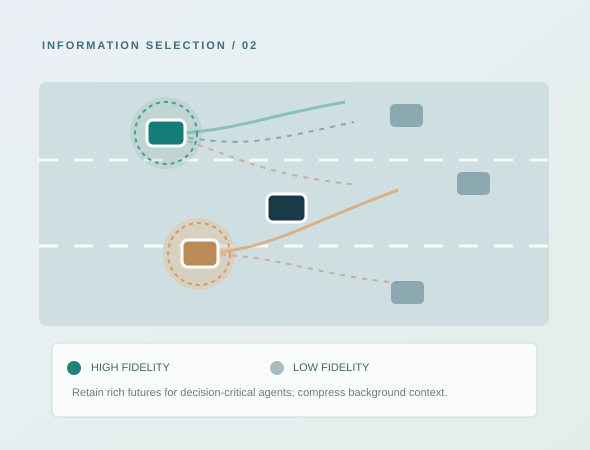

Mixed-fidelity representations for multi-vehicle uncertainty.
RESEARCH MANUSCRIPT · 2026When many agents have uncertain futures, which predictions are most important for the ego agent's immediate action, and how much detail does each require?

Research question
Retaining every predicted motion branch from every nearby agent creates a large state representation, while treating all agents equally can obscure the particular futures that constrain the ego agent's choices.
Method overview
- Build multi-modal predictive futures for surrounding vehicles.
- Extract representative futures and risk-relevant futures relative to candidate ego actions.
- Rank surrounding vehicles by their decision-relevant influence and select key vehicles.
- Use high-fidelity predictions for selected vehicles and lower-fidelity context for background vehicles.
- Train a DQN policy on the mixed-fidelity representation and evaluate an action-level safety shield.
My individual contribution
As first author, I developed the representative/risk-future formulation, key-vehicle scoring and selection, mixed-fidelity DQN state design, and closed-loop experiments including comparisons with alternative vehicle-selection strategies and a safety-shield analysis.
Research relevance
The project explores how to allocate limited decision-making capacity to uncertainty that matters most for the next action. This is potentially transferable to multi-robot, human–robot, and other interactive embodied settings, subject to application-specific modeling and validation.
Paper and artifacts
Zhangyu Huang, Jingde Huang, Dagang Li. “Key-Vehicle-Aware Mixed-Fidelity Decision Making Under Multi-Vehicle Prediction Uncertainty.” Research manuscript, 2026.
Source code and manuscript files are not listed as publicly released. Links can be added after publication or approval for sharing.